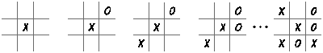
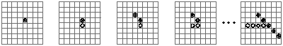
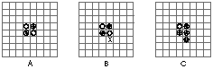
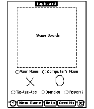

Proto templates are a central feature of the Newton development environment. All
Newton applications use built-in prototypes, and developers can also write their own
application-specific prototypes. This article uses proto templates in the design of an
application that plays a few simple games. For non-Newton developers it reveals some
of the flavor of designing and writing Newton applications.
An application often includes multiple instances of a design element, with only minor
variations among them. In object-oriented systems, it's possible to share the common
portions of the design among several different pieces of the application by using
inheritance. On the Newton, you can do this withproto templates , which let you reuse
the definition of a particular type of view very efficiently. Since views are the basic
visual and functional elements of the Newton user interface, proto templates give you a
very powerful ability to share and reuse user interface features.
Built-in proto templates supply most of the common views seen in Newton
applications -- push buttons, pop-up menus, checkboxes, radio buttons, and so on. In
addition, developers of Newton applications can define their own proto templates. These
templates allow for very compact designs, shorter development times, easier
maintenance, and smaller finished applications.
In this article we develop a game application for the Newton called TapBoard. TapBoard
is actually three games, each with its own style of board, rules of play, and algorithm
for computer-generated moves. The games have many elements in common, and these
can be abstracted into a proto template containing the shared aspects of the design.
You'll find much of the code for TapBoard in the article; the complete source code can
be found on this issue's CD.
If you've never written a Newton application, see "(Slightly) Inside Newton
Programming" for an introduction to the development process and some of the Newton
terminology that's used in this article.
BY GREGG WILLIAMS
Programming the Newton is different -- and I mean that in a good sense. Once you
digest the Newton documentation, you can create a simple application and have it
running on a Newton in about 15 minutes. The Newton development process encourages
lots of quick code/compile/debug cycles -- good for those of us who need positive
reinforcement on a regular basis -- and the cycle is short enough that you don't notice
a delay.
OVERVIEW
Before I describe how a Newton program works, here's an overview of the development
process. To create a Newton application, all you need is the Newton Toolkit (available
from APDA), a serial cable, a 68030 Macintosh with 8 MB of memory and 32-bit
addressing, and a Newton. You create your program with the Toolkit, compile it, and
then download it to a Newton that's connected to your Macintosh through a serial port.
Your completed application appears in the Extras drawer, just like any other
third-party Newton application.
Using tools from a floating window called the layout palette , you draw the layout of
your application -- what its screens should look like -- in layout windows. Not only
can you reuse the dozens of user interface definitions that the Newton Toolkit supplies,
you can create your own custom proto templates (more on proto templates below).
Each layout or custom proto template is stored as a separate file; all of these files,
plus optional files that contain the Macintosh-style resources your program needs,
are grouped into what's called a project .
Once you've drawn all your views, you can open a browser window (familiar to users
of object-oriented languages like Smalltalk and LISP). In the browser window, you can
add and modify both code and data associated with the objects in your program. The code
you write is in a new language called NewtonScript , which is a simple but
sophisticated symbolic language with a Pascal-like syntax.
Most of the (usually short) routines you'll write execute when triggered by a user
action, like the user's tapping a button or writing in a designated area, or by a system
action. You're already acquainted with this event-driven approach from your
experience in programming for the Macintosh. And if you've been doing
object-oriented programming, the idea of a network of cooperating software objects,
rather than a hierarchy of routines executed by a processor that's always in control,
is also familiar to you.
FRAMES AND SLOTS
One idea you may not be familiar with, depending on whether you've used
object-oriented languages, is that of frames . Artificial intelligence fanatics will
probably kill me, but I think of a frame as just a record of data, and slots as what
most of us call record fields. However, slots in NewtonScript are more versatile than
record fields in several ways. First, slots aren't limited to one type of data. (Like
Newton variables, slots aren't typed and can hold, for example, an integer one minute
and a frame the next.) Second, you can arbitrarily add or remove slots from a frame at
any time, including during program execution. Third, you can access slots indirectly
through path expressions ; these allow you to store part of a slot's pathname in a
variable, thus letting the contents of a variable determine which slot gets accessed. In
NewtonScript, a frame looks like this:
{ slotname1: value1, slotname2: value2, ...,
slotnameN: valueN }
Slot names can be omitted or mentioned in any order. By using the slot names _proto
and _parent, you can create data structures that exhibit Newton's flavor of
object-oriented behavior, as discussed later in this article.
To access the data in a frame's slot, you use the notation
framename.slotname
TEMPLATES, VIEWS, AND PROTOS
Everything you see on the Newton screen is composed of views . A view can display,
among other things, a picture, a paragraph of text, an area for writing or drawing, an
on-screen keyboard, a calendar-month page, a pop-up list, or a gauge (which is like a
horizontal thermometer).
Many of the things that you see on the screen are standard prefabricated user interface
elements built into the Newton ROM and available to every Newton developer. These are
called proto templates , or protos for short, and they include six different kinds of
buttons and checkboxes, protoSliders (like a linear slider light switch), protoRolls
(which allow information to scroll vertically off the screen), and different kinds of
labels,borders, and standard interface elements. Each tool on the Newton Toolkit layout
palette allows you to lay out a view or a proto.
Views can contain views inside them, and in fact, a proto is a predefined hierarchical
grouping of views that behaves in a certain way. You can create your own custom
protos by drawing them in layout windows.
In NewtonScript, you can describe a view as a frame called a template ; the Newton
later creates a view from the template at run time. The slots in a template represent
the view's data and the functions that implement the behavior you have to add. (Most
views and protos have behavior built in, and the built-in behavior of a proto is often
quite extensive.) When your application executes, a template (which cannot be
changed) is used to create the data structure in RAM that corresponds to the visual
representation of the view -- that is, what you see on the Newton's screen.
To send a message to a view (that is, to invoke one of its methods), the syntax is
view:messagename(arg1, arg2, ..., argN)
(The function involved is the method , while the name used to invoke it is the message .
You send a message to an object, and that causes the associated method to execute.)
SYSTEM MESSAGES
As with the Macintosh, Newton applications are driven by user events -- the user taps
or draws on the Newton screen in different places -- as well as by system events. The
Newton sends your program system messages , which trigger their corresponding
methods. In some cases, you let the built-in Newton methods do their work; in many
others, you write your own. There are 25 or so system messages you need to know
about. Here are a few of them, and when the corresponding methods execute:
Some system messages pertain to particular views -- for example, buttonClickScript
(for buttons), keyPressScript (for keyboard views), and monthChangedScript (for
the monthly calendar view).
AND THAT'S JUST THE BEGINNING. . .
There's a lot more to programming the Newton. You can find out more by reading the
manuals that come with the Newton Toolkit. Be sure to read any errata sheets, release
notes, and "read me" files; I overlooked one and missed a piece of information that
would have saved me several days' work!
TapBoard plays three games: Tic-tac-toe, Gomoku, and Reversi. The user chooses one
of the games from a set of radio buttons, a game board is displayed, and the user moves
by tapping a square on the board. The application responds with a countermove. This
process repeats until one player wins or the game ends in a tie. When the user closes
TapBoard, the application remembers the state of the board -- which game is being
played, where the pieces are placed, whose turn it is, and the game's outcome. When
TapBoard is reopened, it restores the state so that the user can continue the game
where it left off.
So, common elements shared by the games include the following:
All these common actions can be abstracted into a prototype that each specific game can
then inherit from (as described later in the section "The protoBoard Proto Template").
But since the games are different, each also has its own rules and possibly its own
board, and each requires its own algorithm for finding good moves for the computer;
details follow.
TIC-TAC-TOE
You undoubtedly know this game, but we'll describe it briefly: Tic-tac-toe is played on
a 3 x 3 board with players taking turns making X's and O's. The first player to get
three in a row horizontally, vertically, or diagonally wins. If neither player gets
three in a row, the game is tied. Figure 1 shows a typical game of Tic-tac-toe. X gets
three on the diagonal and wins.
Tic-tac-toe is a simple game to master. There are a few easy heuristics, such as
always take the center square if you can, and with a little thought it's not hard to see
several moves ahead.

Figure 1 Tic-tac-toe
TapBoard's algorithm for determining a good Tic-tac-toe move involves doing a
two-move look- ahead, combined with some simple heuristics. The look-ahead tries
all possible moves, then tries all possible answering moves. The heuristic gives
greater weight to taking the center and corner squares. This algorithm doesn't play a
perfect game of Tic-tac-toe, but this is actually an advantage, for two reasons: it pulls
players into the game by giving the impression that the computer is an easy target, and
it provides a game that's playable by younger users (my five-year-old daughter loves
it). GOMOKU
Gomoku is played on an 8 x 8 board. Players take turns placing pieces on the board,
and the first player to get five in a row horizontally, vertically, or diagonally wins.
Figure 2 shows a short game of Gomoku won by white (a real game would of course be
played more defensively than this one, which is for demonstration purposes only).

Figure 2 Gomoku
Gomoku is more challenging than Tic-tac-toe. The larger game board and longer
winning sequence make for many more combinations, and the game virtually requires
that the winner "sneak up" on the loser, rather than just going for a simple sequence
of five pieces, which the opponent can easily detect and prevent.
TapBoard's approach to finding a good Gomoku move involves making three passes over
the board: the first looks for winning moves; the second looks for situations where the
user has three or more in a row and tries to block those; the third looks for situations
where TapBoard has three or more in a row and tries to add to those. This algorithm
plays a defensive game that's hard to beat.
REVERSI
Reversi is also played on an 8 x 8 board. Four pieces are placed in the center of the
board as shown in Figure 3A, and the players take turns placing pieces, trying to trap
the opponent's pieces between the new piece and an existing one horizontally,
vertically, or diagonally. Figure 3B shows one of the squares that would be a legal first
move for white. The pieces that are "trapped" change color, or reverse -- hence the
name of the game. Figure 3C shows the result of the move in 3B.

Figure 3 Reversi
Play continues until no legal moves are left. The player with the most pieces wins. If
both players have the same number of pieces, it's a tie. Because of the reversing
pieces, the situation can change suddenly and dramatically. Often one player looks like
the clear winner until near the end of the game, when the other player suddenly surges
ahead and wins.
TapBoard looks for a good move in Reversi by checking every possible move, counting
the number of user pieces that will be converted, and then modifying the counts based
on heuristics concerning plays along the edges of the board. This algorithm plays the
game quite well, and can often come on surprisingly strong at the end of the game.
The layout of the TapBoard application is shown in Figure 4. The center of the screen is
the game board, and there are three different game board templates corresponding to
the three games. Only one is displayed at a time. Below the board are radio buttons
indicating whose turn it is. Underneath these are pictures of the pieces for the user
and for the application, which change from game to game. Below them is a set of radio
buttons with the names of the games, from which the user chooses. At the bottom of the
screen is a set of buttons including a time and battery status button, buttons for New
Game, Help, and Credits, and a close box.

Figure 4 TapBoard Application Screen Layout
Besides the games themselves, the application has to take care of the following:
Most of the TapBoard application is in the application template and the game boards.
The buttons are in the application template. The core functionality of the
application,playing the games, is in the game boards and in protoBoard, the proto
template from which all three games inherit. (Newton inheritance is a little different
from what you might be used to; for more information, see "Proto and Parent
Inheritance.")
The protoBoard proto template takes care of several functional areas. In some cases, it
does everything needed by the game boards that derive from it. In other cases, one or
more of the game boards must override part of the proto template functionality -- and
several slots aredesigned to be overridden. In still other cases, a protoBoard function
uses data slots defined in the game boards as input.
BOARD STATE AND SHAPE
The protoBoard proto template maintains a two-dimensional array, named
boardArray, that remembers where pieces have been placed on the board. The array is
actually one entry larger than the board in each direction. This oversizing can be
handy in the algorithms used to find a good move for the application.
Each space in the array can have one of four values: empty, Newton piece, user piece,
or edge of the board. To simplify the algorithms used to compute the application's
moves, we use 1 for the user and -1 for the Newton, so that ifp is a piece of one type,
-p is the opposing type of piece. Empty spaces are filled with nil, and board edges are
0 -- neither nil nor a valid Newton or user piece value. These same values are used to
keep track of whose turn it is and who has won (if anyone). We define constants for
each of these potential values:
constant kEmptySquare := nil; constant kNewtonPiece := -1; constant kUserPiece := 1; constant kBoardEdge := 0; constant kTieWinner := 0;
Here's the portion of protoBoard's viewSetupFormScript that creates boardArray:
protoBoard.viewSetupFormScript := func()
begin
. . .
// Make the board array; we make it one entry larger in each
// direction than the board, which is nice sometimes when
// figuring out moves.
boardArray := Array(squaresWide+2, kEmptySquare);
local i;
for i := 0 to squaresWide+1 do
begin
boardArray[i] := Array(squaresHigh+2,
if (i = 0) or (i = squaresWide+1) then
kBoardEdge else kEmptySquare);
boardArray[i][0] := kBoardEdge;
boardArray[i][squaresHigh+1] := kBoardEdge;
end;
// Reset the number of squares left.
squaresLeft := squaresWide * squaresHigh;
// No winner yet.
winner := nil;
// Do any game-specific setup.
:setupBoard();
. . .
end
We initialize squaresLeft to the number of squares on the board so that TapBoard can
determine whether the board is full without having to check every square. We also set
winner to nil. When the game is finished, the winner slot is set to kUserPiece (user
won), kNewtonPiece (Newton won), or kTieWinner (tie). This allows for a very quick
check on whether the game is over and who won.
The setupBoard function is called to do any game-specific board setup. For example,
Reversi needs to place four initial pieces on the board. The default setupBoard function
defined in protoBoard does nothing; inheritors of protoBoard override it as needed.
Two slots, squaresWide and squaresHigh, must be defined by any protoBoard inheritor
to determine the width and height of the board. They're used throughout protoBoard --
as in viewSetupFormScript -- and in the following utility functions. (Note that
LocalBox is a function that returns a rectangle having the width and height of the view
in its right and bottom slots, respectively.)
// The height of a square:
protoBoard.squareHeight := func()
begin
return :LocalBox().bottom div squaresHigh;
end
/ The width of a square:
protoBoard.squareWidth := func()
begin
return :LocalBox().right div squaresWide;
end
// The bounds of a square:
protoBoard.squareBounds := func(x, y)
begin
local width := :squareWidth();
local height := :squareHeight();
// RelBounds takes a top and left coordinate, a width, and a
height
// and returns a rectangle.
return RelBounds((x-1)*width+1, (y-1)*height+1, width-1,
height-1);
end
// Which square (1..squaresWide) contains coordinate x (or zero if
none):
protoBoard.squareOfX := func(x)
begin
local gb := :GlobalBox();
if (x < gb.left) or (x > gb.right) then return 0;
else return ((x - gb.left) div :squareWidth()) + 1;
end
// Which square (1..squaresHigh) contains coordinate y (or zero if
none):
protoBoard.squareOfY := func(y)
begin
local gb := :GlobalBox();
if (y < gb.top) or (y > gb.bottom) then return 0;
else return ((y - gb.top) div :squareHeight()) + 1;
end
DRAWING THE BOARD
The drawing of the board itself is created once and stored in the slot
backgroundDrawing. This drawing is then displayed by viewDrawScript.
protoBoard.viewDrawScript := func()
begin
:DrawShape(backgroundDrawing, nil);
end
The backgroundDrawing slot is built in viewSetupDoneScript, which is called just
before the view is shown on the screen. The default function supplied in protoBoard
draws a closed set of squares for the board. This is appropriate for Gomoku and Reversi
but is overridden by Tic-tac-toe, which needs an open grid.
protoBoard.viewSetupDoneScript := func()
begin
// Build the board display. This builds a closed set of squares,
// but can be overridden.
local height := :LocalBox().bottom - 1;
local width := :LocalBox().right - 1;
backgroundDrawing := [];// Empty array
for x := 0 to width by :squareWidth() do
AddArraySlot(backgroundDrawing, MakeLine(x, 0, x, height));
for y := 0 to height by :squareHeight() do
AddArraySlot(backgroundDrawing, MakeLine(0, y, width, y));
end
ADDING PIECES
Besides an entry in boardArray, each piece has a subview within the board of class
clPictureView, which displays the piece on the board. Adding a piece to boardArray,
adding the corresponding subview, and adjusting squaresLeft are the responsibility of
the addPiece function.
protoBoard.addPiece := func(p, x, y)
begin
// Mark the new piece in boardArray.
boardArray[x][y] := p;
// Check if there's already a view there in the view list.
local bounds := :squareBounds(x, y);
local i := if p = kUserPiece then player1Piece else player2Piece;
local v;
// ChildViewFrames returns an array containing all child views.
foreach v in :ChildViewFrames() do
if (v.viewBounds.top = bounds.top) and
(v.viewBounds.left = bounds.left) then
begin
// If there is, replace the icon and redisplay.
SetValue(v, 'icon, i);
return;
end;
// One less square available.
squaresLeft := squaresLeft - 1;
// Create, add in, and display the new view.
AddStepView(self,
{viewClass: clPictureView, viewBounds: :squareBounds(x, y),
viewFlags: vVisible, icon: i}):Dirty();
end
To determine the picture to display, addPiece looks in slots player1Piece and
player2Piece, which contain pictures for the user and for the computer. The default
versions supplied in protoBoard are suitable for Reversi and Gomoku. Tic-tac-toe
overrides these slots to provide an X and an O.
Note that this function checks to see if there's already a piece on that square. If there
is, it simply changes the picture for the piece rather than creating a new view. In most
games, moving on a square that already has a piece on it is illegal. But in Reversi, we
often replace existing pieces with pieces of the opposite color.
MAKING MOVES
Checking the legality of a move, deciding whether it's a winning or losing move, and
then switching the state of whose turn it is, are done in the move function. This is the
function to call to actually make a move.
protoBoard.move := func(p, x, y)
begin
// Check if this is a reasonable thing to do.
if :isTurn(p) and :validMove(p, x, y) then
begin
// Add the piece to the board.
:addPiece(p, x, y);
// If this was a winner, let the user know.
if :winningMove(p, x, y) then
begin
winner := p;
:announceWin(p);
end
// If this was a tie-maker, let the user know.
else if :tieGame() then
begin
winner := kTieWinner;
:turn(kTieWinner);
:announceWin(kTieWinner);
end
// Switch whose turn it is.
else :turn(-p);
end;
end
The functions isTurn, announceWin, and turn are global application functions defined
in the application template; we'll get to them later. The functions validMove,
winningMove, and tieGame are game-specific and are defined in the protoBoard
inheritors. We provide default versions:
protoBoard.validMove := func(p, x, y)
begin
// If it's an empty space, it's legal to move there.
// This function may be overridden.
return boardArray[x][y] = kEmptySquare;
end
protoBoard.winningMove := func(p, x, y)
begin
// By default, the computer never wins and the user wins when the
// board is full. This is always overridden, but we leave it in
// because it can be handy during the early stages of developing
// a new game.
if p = kNewtonPiece then return nil
else return squaresLeft = 0;
end
protoBoard.tieGame := func()
begin
// It's a tie if there's nothing left to do. This can be
overridden.
return squaresLeft = 0;
end
THE USER'S MOVES
The user moves by tapping on the board. When the tap first occurs, viewClickScript is
called. This function turns off ink and plays a sound to let the user know clearly that
the tap was hard enough. The actual move is recorded in viewStrokeScript, which is
called after the user lifts the pen from the screen.
protoBoard.viewClickScript := func(unit)
begin
// No ink (we're tapping, not drawing).
InkOff(unit);
// Make a nice little click to give the user warm fuzzies.
PlaySound(ROM_click);
// But let the normal processing handle tracking and such.
return nil;
end
protoBoard.viewStrokeScript := func(unit)
begin
// Find out where we clicked to start with.
local originalX := :squareOfX(GetPoint(firstX, unit));
local originalY := :squareOfY(GetPoint(firstY, unit));
// If we ended where we started, make the move.
if (originalX <> 0) and (originalY <> 0) and
(originalX = :squareOfX(GetPoint(finalX, unit))) and
(originalY = :squareOfY(GetPoint(finalY, unit))) then
:move(kUserPiece, originalX, originalY);
return true;
end
We return nil from viewClickScript to say we didn't handle it, so the system processes
the stroke for us. But we return true from viewStrokeScript because here we did
handle the stroke and don't want the system to do anything more.
THE COMPUTER'S MOVES
It's the computer's turn to move after the user has moved, or because the user tapped
the Computer's Move radio button. Rather than put code in each of these places, we
simply set up an idle method called viewIdleScript in protoBoard that checks to see if
it's the computer's turn and then makes its move.
This is not the most efficient approach because it involves checking periodically while
the user is thinking, but it's quite simple (and shows how to set up idle methods).
Since it only checks every quarter of a second, it doesn't actually use much CPU or
battery power.
protoBoard.viewSetupFormScript := func()
begin
. . .
// Have our idle method called.
:SetUpIdle(250);
end
protoBoard.viewIdleScript := func()
begin
// If we are visible, and it's the computer's turn, and there's
// no winner...
if Visible(self) and :isTurn(kNewtonPiece)
and (winner = nil) then
begin
// Put up the "Working..." display, and
// figure the computer's move.
:startWorking();
:makeComputerMove();
:stopWorking();
end;
// Try again in a quarter of a second.
return 250;
end
protoBoard.makeComputerMove := func()
begin
// By default, we just do something random.
// This is always overridden.
:makeRandomMove(kNewtonPiece);
end
protoBoard.makeRandomMove := func(p)
begin
// Try ten times to find a reasonable random move.
local i, x, y;
for i := 1 to 10 do
begin
x := Random(1, squaresWide);
y := Random(1, squaresHigh);
if :validMove(p, x, y) then
begin
:move(p, x, y);
return;
end;
end;// If that doesn't work, just pick the first linear move.
for x := 1 to squaresWide do
for y := 1 to squaresHigh do
if :validMove(p, x, y) then
begin
:move(p, x, y);
return;
end;
end
SAVING AND RESTORING STATE
Between invocations of TapBoard the application needs to save its state, so that it can
restore the state when the user reopens the application. Permanent data on the Newton
is stored in one or more database-like objects calledsoups (for more on soups and
related concepts, see "Soups"). Since we only need to save a fairly simple set of state
information, we can put it into the system configuration and preferences soup. This
soup is named "System" and contains information such as the user's name and Newton
configuration options.
The process of saving and restoring the state is triggered in the application view, as
we'll discuss later. But the bulk of the actual work is done in protoBoard.
protoBoard.saveState := func()
begin
// Get the existing state entry, if any.
local stateEntry := :getStateEntry();
// If there isn't one yet, make one.
// Note: GetStores()[0] returns the built-in store;
// GetSoup(ROM_SystemSoupName) returns the "System" soup.
if stateEntry = nil then
stateEntry := GetStores()[0]:GetSoup(ROM_SystemSoupName)
:Add({Tag: kPackageName});
// If we can't make one, well, uh, let's just forget the whole
// thing.
if stateEntry = nil then return;
// Build an array of pieces and their positions from boardArray.
local x, y;
local pieces := [];
local ba := boardArray;
for x := 1 to squaresWide do
for y := 1 to squaresHigh do
if ba[x][y] <> kEmptySquare then
AddArraySlot(pieces,
{player: ba[x][y], x: x, y: y});
// Remember which game this is, the piece positions, whose turn
// it is, and the winner.
stateEntry.name := name;
stateEntry.pieces := pieces;
stateEntry.whichTurn := :whoseTurn();
stateEntry.winner := winner;
// Tell the soup to save the changed entry.
EntryChange(stateEntry);
end
protoBoard.restoreState := func(stateEntry)
begin
// For each piece stored in the state entry, add it to the board.
local p;
foreach p in stateEntry.pieces do
:addPiece(p.player, p.x, p.y);
// Set whose turn it is.
:turn(stateEntry.whichTurn);
// Set the winner, if there is one.
winner := stateEntry.winner;
end
The constant kPackageName is the name of the application concatenated with a
registered signature. This string is unique, ensuring that we don't try to use an entry
in the soup that is already used by another application:
// Who we are: constant kAppSymbol := '|TapBoard:Chesley|; constant kPackageName := "TapBoard:Chesley";
The function getStateEntry is defined in the application template:
TapBoard.getStateEntry := func()
begin
// Find our one-and-only entry in the System soup, if there
// is one.
return Query(GetStores()[0]:GetSoup(ROM_SystemSoupName),
{type: 'index, indexPath: 'tag, startKey: kPackageName,
validTest: func(item) StrEqual(item.tag,
kPackageName)}):Entry();
end
Each game inherits from protoBoard all of the functionality described in the previous
section. Now we only need to define the details of the game -- the size of the playing
board, what the pieces look like, what the valid moves are, and the algorithm for
figuring out the computer's moves.
TIC-TAC-TOE
For Tic-tac-toe, we provide the name of the game and the board size and override the
default piece pictures as follows:
tictactoe :=
{ ... name: "Tic-tac-toe",
squaresWide: 3, squaresHigh: 3,
player1Piece: TapBoard.rsrc:XPicture,
player2Piece: TapBoard.rsrc:OPicture ... }
We override the board drawing in viewSetupDoneScript.
tictactoe.viewSetupDoneScript := func()
begin
// Make an open cross-hatch (the default function does a closed
// board).
local height := :LocalBox().bottom - 1;
local width := :LocalBox().right - 1;
local xIncr := :squareWidth();
local yIncr := :squareHeight();
backgroundDrawing := [];
for x := xIncr to width - xIncr by xIncr do
AddArraySlot(backgroundDrawing, MakeLine(x, 0, x, height));
for y := yIncr to height - yIncr by yIncr do
AddArraySlot(backgroundDrawing, MakeLine(0, y, width, y));
end
We can use the default tieGame function, which says the game is a tie if all the squares
are used, but we need to override winningMove.
tictactoe.winningMove := func(p, x, y)
begin
local ba := boardArray;
return
((ba[x][1] = p) and (ba[x][2] = p) and (ba[x][3] = p)) or
((ba[1][y] = p) and (ba[2][y] = p) and (ba[3][y] = p)) or
((ba[1][1] = p) and (ba[2][2] = p) and (ba[3][3] = p)) or
((ba[3][1] = p) and (ba[2][2] = p) and (ba[1][3] = p));
end
We also need to override makeComputerMove:
tictactoe.makeComputerMove := func()
begin
local moves := [];
local bestScore := -1000;
local newScore;
local x, y;
// Try each board position.
for x := 1 to squaresWide do
for y := 1 to squaresHigh do
if boardArray[x][y] = kEmptySquare then
begin
// Look ahead to score this move.
newScore :=
:tryMove(kUserPiece, kNewtonPiece, x, y);
// If this is the best one yet, remember only it.
if newScore > bestScore then
begin
moves := [];
bestScore := newScore;
end;
// If it's tied for best move, remember it too.
if newScore = bestScore then
AddArraySlot(moves, {mvx: x, mvy: y});
end;
// If there are any good moves...
if Length(moves) > 0 then
begin
// Make the move.
local move := moves[Random(0, Length(moves)-1)];
:move(kNewtonPiece, move.mvx, move.mvy);
end
// If there are no good moves, make a random one and pray.
else :makeRandomMove(kNewtonPiece);
end
tictactoe.tryMove := func(d, p, x, y)
begin
// First, guess based on heuristics.
// Note: We use a quoted array here to save execution time;
// quoting it means there will be only one copy -- without
// the quote a new one would be constructed each time at run
// time. Of course, this also means we can't change the contents,
// but we don't want to.
local score := '[5, 0, 5, 5, 10, 5, 5, 0, 5][x+x+x+y-4];
// Make the move internally (we'll retract it later).
local ba := boardArray;
ba[x][y] := p;
squaresLeft := squaresLeft - 1;
// If it's a winner, great, give it a high score.
if :winningMove(p, x, y) then score := 100;
// If there's anything to look ahead to, do it.
else if (squaresLeft <> 0) and (d > 0) then
begin
local worstResponse := 1000;
local newResponse;
local x2, y2;
// Try every board position.
for x2 := 1 to squaresWide do
for y2 := 1 to squaresHigh do
if ba[x2][y2] = kEmptySquare then
begin
// How good is this one?
newResponse := :tryMove(d-1, -p, x2, y2);
// If it's a loser, give up quick.
if newResponse >= 100 then
begin
ba[x][y] := nil;
squaresLeft := squaresLeft + 1;
return -100;
end;
// If it's the least bad one so far,
// remember that.
if newResponse < worstResponse then
worstResponse := newResponse;
end;
score := score - worstResponse;
end;
// Retract the move.
ba[x][y] := kEmptySquare;
squaresLeft := squaresLeft + 1;
return score;
end
That's it. As you can see, most of the real work was done by protoBoard.
GOMOKU
For Gomoku, we provide the name and board size but leave the default piece pictures
and board drawing.
gomoku := { ... name: "Gomoku", squaresWide: 8,
squaresHigh: 8 ... }
The tieGame function in protoBoard is fine, but winningMove needs to be overridden.
We also need to override makeComputerMove and makeRandomMove (which
makeComputerMove calls) because the default version makes some really stupid moves
in the case of Gomoku (you shouldn't move on the edge of the board if you can avoid it).
You can find the code for these functions, along with the rest of the source code, on this
issue's CD. Again, most of the work was done by protoBoard.
REVERSI
For Reversi, as for Gomoku, we define the name and board size but use the default piece
pictures and board drawing. We also define a setupBoard function which places the
first four pieces on the board.
Making a move in Reversi is more complex than in the other games, since existing
pieces must be reversed. To do this, we override the move function in protoBoard.
Determining whether a move is valid is also more complex, since we require that the
user flip some pieces. There are no "winning moves" per se. Rather, the game is scored
when there are no more legal moves. We make this determination in
makeComputerMove, and then echo it in winningMove and tieGame. Again, see the CD
for the complete source code.
While the functionality of making a move by either side is encapsulated in the game
board templates and the protoBoard proto template, keeping track of whose turn it is
and which game is being played is the responsibility of the application template. This
template also provides Help and Credits buttons and coordinates activities when the
application opens and closes.
The Your Move and Computer's Move radio buttons are simple protoRadioButton
templates enclosed in the protoRadioCluster. After a user move is recorded, the
Computer's Move button is turned on. The viewIdleScript of protoBoard notices this
state and makes the computer's move, which in turn sets the Your Move radio button.
The game selection buttons are also protoRadioButton templates within a
protoRadioCluster named gamePicker. When the value of these buttons changes, the
gamePicker clusterChanged function starts the appropriate game by calling the
newGame function in the application. The newGame function finds the appropriate game
board and makes it visible; then it starts with the user's turn.
gamePicker.clusterChanged := func()
begin
// Find the name of the new button.
foreach t in stepChildren do
if t.buttonValue = clusterValue then
begin
// Found it; start a new game with that name.
:newGame(t.text);
return;
end
end
TapBoard.newGame := func(nm)
begin
// Look through all the boards.
local b;
foreach b in boardList do
// Are we looking for the one that's currently displayed?
if nm = nil then
begin
// If so, and if this is it, clear it.
if Visible(b) then b:clearBoard();
end;
// If not, check if this is the one that's been specified.
else if StrEqual(b.name, nm) then
begin
// Set the current board, clear it, show it, and set
// the piece icons.
currentBoard := b;
b:clearBoard();
b:Show();
player1Sample.icon := b.player1Piece;
player1Sample:Dirty();
player2Sample.icon := b.player2Piece;
player2Sample:Dirty();
end
// If this isn't it, hide it (harmless if already hidden).
else b:Hide();
// Always start with the user's turn.
:turn(kUserPiece);
end
As a shortcut, newGame uses boardList, an array that lists the available boards (one
for each of the three games). It could have searched through the entire view list, but
it's much quicker to have an array that lists just the game boards. This array,
boardList, is created in the application's viewSetupFormScript and filled in by
protoBoard's viewSetupFormScript.
TapBoard.viewSetupFormScript := func()
begin
boardList := [];
. . .
end
protoBoard.viewSetupFormScript := func()
begin
// Register ourselves with the application.
AddArraySlot(boardList, self);
. . .
end
The newGame function also sets an application slot called currentBoard, which keeps
track of the currently displayed board.
The two application-level functions below make it easy to set and find out whose turn
it is. These functions are used within protoBoard and the game boards.
TapBoard.turn := func(p)
begin
userOrComputer:SetClusterValue(p);
end
TapBoard.isTurn := func(p)
begin
return p = userOrComputer.clusterValue;
end
DISPLAYING INFORMATION
The announceWin utility function brings up protoGlance templates (text views that
appear for a brief time only) to announce game winning, losing, and tying. Other
utility functions bring up and remove the "Working..." display. And finally, two utility
functions bring up the help and credits protoFloatNGo templates (floating views with
close boxes). All of these templates are in linked subviews.
TapBoard.announceWin := func(p)
begin
// Make sure the current game display is up to date.
RefreshViews();
// Bring up the right glance view.
if p = kUserPiece then youWin:Open()
else if p = kNewtonPiece then iWin:Open()
else tie:Open();
end
TapBoard.startWorking := func()
begin
// Open the view.
working:Open();
// Force a refresh of anything that might need it; we're about
// to do lots of time-consuming work, so the system won't get a
// chance to do this otherwise.
RefreshViews();
end
TapBoard.stopWorking := func()
begin
working:Close();
end
TapBoard.announceHelp := func()
begin
help:Open();
end
TapBoard.announceCredits := func()
begin
credits:Open();
end
SAVING AND RESTORING THE STATE
When the application opens, viewSetupDoneScript checks whether there's a saved state
in the System soup. If there is, it restores the state. When the application closes,
viewQuitScript saves the state. A utility function, getStateEntry (described earlier),
returns the current state entry in the System soup, if there is one.
TapBoard.viewSetupDoneScript := func()
begin
// Find the saved state.
local stateEntry := :getStateEntry();
// Is there one?
if stateEntry = nil then
// If not, default to the first radio button.
gamePicker:setClusterValue(1)
else
begin
// If there is, restore the state from the entry.
gamePicker:setByName(stateEntry.name);
currentBoard:restoreState(stateEntry);
end;
end
gamePicker.setByName := func(nm)
begin
// Find the radio button with this name and set it.
local t;
foreach t in :ChildViewFrames() do
if StrEqual(t.text,nm) then
begin
if clusterValue <> t.buttonValue then
:setClusterValue(t.buttonValue);
return;
end
end
TapBoard.viewQuitScript := func()
begin
// If any board is displayed (which it always will be -- we're
just
// being paranoid), save the current state.
if currentBoard <> nil then currentBoard:saveState();
end
REMOVING THE SOUP ENTRY
When the application is removed from the Newton, it needs to remove the entry in the
System soup so that it doesn't permanently waste Newton memory. This is done in the
RemoveScript function. Note that this function is called both when the application is
removed and when the card it's on is taken out of the Newton. We could distinguish
these two cases, and not remove the soup entry if it's simply the card being pulled out,
but we want to make sure we don't clutter up precious memory with game trivia if the
card is never reinserted.
RemoveScript := func(packageFrame)
begin
local cursor := Query(GetStores()[0]:GetSoup(ROM_SystemSoupName),
{type: 'index, indexPath: 'tag,
startKey: kPackageName, validTest: func(item)
StrEqual(item.tag, kPackageName)});
if cursor:Entry() <> nil then
EntryRemoveFromSoup(cursor:Entry());
end;
ALLOWING FOR OTHER SCREEN SIZES
We also need to consider the possibility that TapBoard may be used on a Newton with a
screen size larger or smaller than that of the first Newton model (240 x 336 pixels).
First we define all views in the bottom half of the application window to be relative to
the bottom of the view, and views in the top half relative to the top. Leaving about 20
pixels of space between these two sets of views allows the application to shrink by that
much, or to grow by a bit. We then need to dynamically set the bounds of the
application to fit the screen, using the system function GetAppParams. If the screen is
much larger than 240 x 336 we center it instead. All of this is accomplished in the
application's viewSetupFormScript:
TapBoard.viewSetupFormScript := func()
begin
. . .
// Remember the original dimensions in case we need them.
local originalWidth := viewBounds.right - viewBounds.left;
local originalHeight := viewBounds.bottom - viewBounds.top;
// Default the app bounds to the screen bounds
// (nice on small screens).
local ap := GetAppParams();
self.viewBounds := RelBounds(0, ap.appAreaTop,
ap.appAreaWidth, ap.appAreaHeight);
// But if the screen's too large for that to look good, center
// it. (We allow for a range of sizes to handle future screens.)
if ap.appAreaWidth > (originalWidth+20) then
self.viewBounds.right := originalWidth;
if ap.appAreaHeight > (originalHeight+20) then
begin
self.viewBounds.top :=
ap.appAreaTop +
(ap.appAreaHeight - originalHeight) div 2;
self.viewBounds.bottom :=
self.viewBounds.top + originalHeight;
end;
end
The following modifications to TapBoard would make good NewtonScript programming
exercises:
As you've seen, TapBoard reduces code size by using proto templates to abstract out the
redundant elements of the three games. This also reduces development time by making
the application simpler, and easier to understand and modify.
The protoBoard proto template used in TapBoard is fairly large, implementing a
substantial amount of functionality. Other uses of proto templates are much smaller,
ranging from custom button types to modified versions of standard views or even
completely new classes of templates.
Now you're ready to write some proto templates of your own -- assuming you've
ordered the Newton Toolkit from APDA. Be sure to share your protos with your
friends!
When you draw a view inside another view, the one inside is said to be a subview or a
child view . When you draw nested views in a layout window in the Newton Toolkit,
you're doing the equivalent of writing code that is a frame, with each piece of data or
method having its own slot.
Unless it's at the end of its chain, every view has a _proto slot, which points to the
proto from which it inherits its behavior. Similarly, every view (except the "top"
one) has a _parent slot, which points to the view that contains it (that is, its parent
view ).
Here's where things get interesting. A view exists in RAM while your program is
executing; it can have its own slots, which are also in RAM. If some code tries to access
a slot that the view doesn't have, the view looks for that slot in the view's proto. If its
proto doesn't have that slot, the proto looks for the slot in theproto's proto (if it has
one), and so on up the line of proto "ancestors." The value that's ultimately returned is
used as if it were actually a slot in RAM belonging to that view.
But wait -- there's more! You also have parent inheritance: a view can get a slot value
from one of its parent views. If the desired slot isn't found in any proto, the search
continues (from above) with the view's parent and, if necessary, its protos. (The
process is a bit different when changing slot values; the only slot values you can
change are in the view or one of its ancestors -- all of these slots, of course, are in
RAM. For details, see the "Working With Proto Templates" chapter of the
NewtonScript Programming Language manual.)
Why two kinds of inheritance? Two answers: ROM and application size. The reason for
views and protos in the first place is to minimize the amount of code in your
application and so make it as compact as possible. Because views and protos are in
ROM, though, you can't change their slots. You need another mechanism to override
their default values, and that's where proto inheritance comes in.
Proto inheritance shrinks application size by minimizing the amount of code associated
with individual instances of often-used "building blocks." Parent inheritance shrinks
application size by allowing related elements in your program to share common data or
behavior. (For example, three radio buttons in a cluster may share a button-click
method that's different from that of other buttons on the same screen.)
In addition to sending a message to a certain view, you can send a message that starts
with the current view and checks protos, parents, and parent protos until it finds a
view or proto template that has a slot with the same name as the message. The
associated method, wherever it comes from, is then applied to the current view. The
syntax is
:messagename(arg1, arg2, ..., argN)
This is a very brief overview of a software architecture that has many implications.
To fill in the gaps, read the Newton documentation.
-- GW
If frames are sort of like records, then soups are like what we normally think of as
files -- both hold collections of data. But soups -- like frames -- do so in a way that's
more relaxed and free form. To use a food analogy, if traditional files are like a stack of
sugar cubes, then soups are like, well, soup.
Soups store data in a general format that doesn't limit their usefulness to the
application that created them. For example, any Newton application can access all the
names in the Newton's built-in address book because the names are in the same soup.
Soups engender their own terminology. Here are a few terms you need to know:
Soups are one of the uniquely new things about the Newton, and are a topic unto
themselves. To learn more, see the documentation that comes with the Newton Toolkit.
-- GW
HARRY R. CHESLEY (AppleLink CHESLEY1, NewtonMail CHESLEY) has spent most of
the last three years in subspace (seedevelop Issue 7, "The Subspace Manager in
System 7.0") working on PowerTalk templates. His return to Earth-normal space was
accompanied by an interstitial stutter, resulting in a temporary doubling of his
personality matrix. This allowed him to simultaneously finish PowerTalk and design
and write the NewtonScript communications interface (protoEndpoints). He's better
now, but still occasionally repeats himself in social situations. If he should happen to
tell you a story you've heard from him before, just humor him and pretend it's all new
stuff. Too much self-referential introspection could cause a substitial relapse.*
For more information about views, see the "Views" chapter of the Newton
Programmer's Guide .*
The utility functions are usable only at viewSetupChildrenScript time and later
because they use the LocalBox function. You couldn't use them, for instance, in
viewSetupFormScript. *
THANKS TO OUR TECHNICAL REVIEWERSChris Christensen, Bob Ebert, Mike
Engber, Martin Gannholm, Kent Sandvik, Maurice Sharp, Gregg Williams *